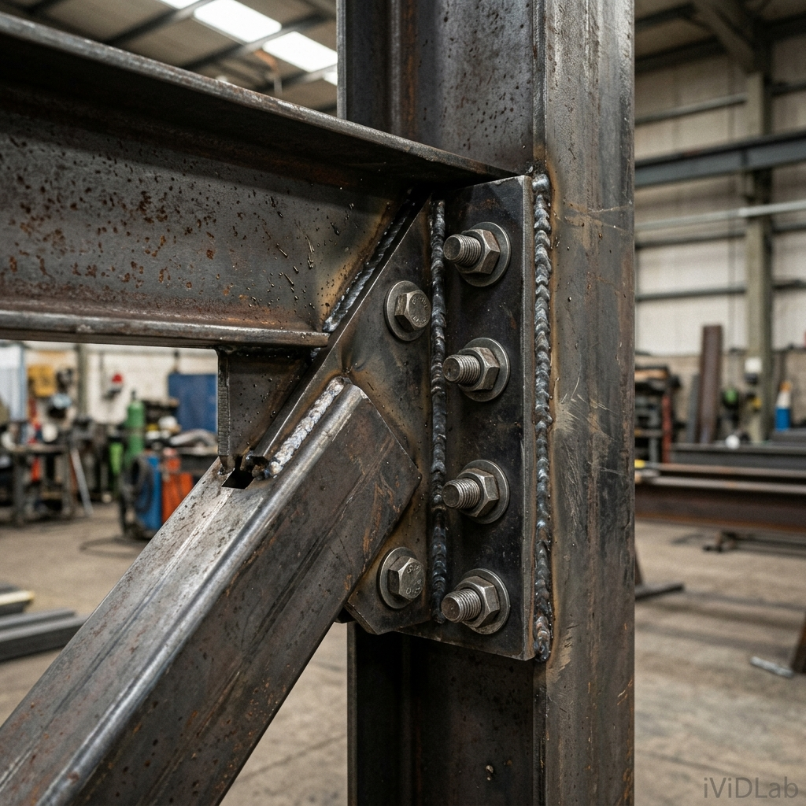
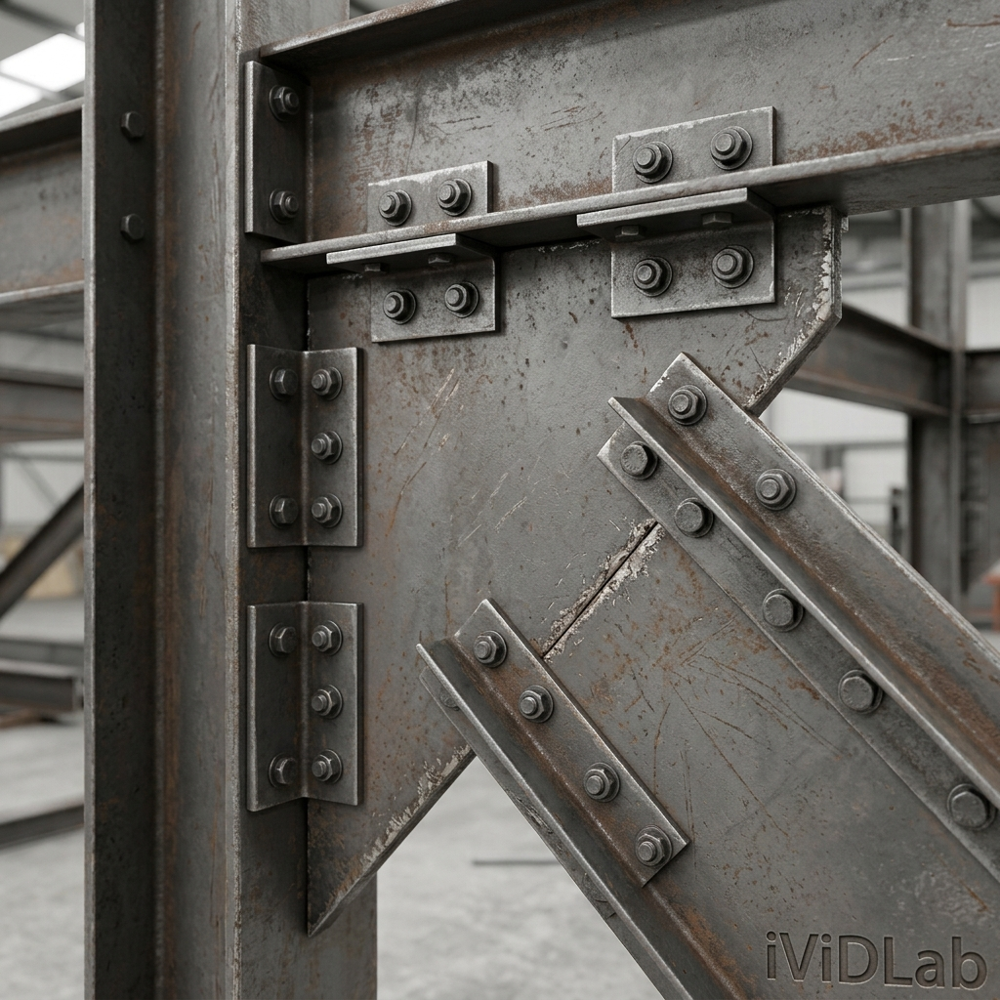

Giải pháp giằng góc khung: Làm chủ Corner bolted gusset (57) & Wraparound gusset (58)Corner Bracing Solutions: Mastering Corner Bolted Gusset (57) & Wraparound Gusset (58)
Chuyên mục: Tekla StructuresCategory: Tekla Structures•Ngày đăng: 24/05/2026Published: May 24, 2026•Tác giả: iViDLab TeamAuthor: iViDLab Team

Macro 56: Corner Tube Gusset

Macro 57: Corner Bolted Gusset
1. INTRODUCTION (Tổng quan nhiệm vụ & Component ID)
Tại các nút giao góc (corner) giữa dầm và cột, việc bố trí liên kết hệ giằng chéo đòi hỏi một bản mã góc (corner gusset) được thiết kế đặc biệt để vừa tránh va chạm với hệ khung chính, vừa đảm bảo truyền lực tối ưu. Nhóm công cụ Corner Bracing Macros của Tekla giải quyết triệt để bài toán này với 2 macro chủ lực:
Corner tube gusset (56): Dành riêng cho hệ giằng dùng thép hộp/ống (RHS/CHS). Ống giằng được xẻ rãnh, đút bản mã (tongue/connection plate) vào giữa và bắt bu lông hoặc hàn. Có hỗ trợ bịt kín đầu ống.
Corner bolted gusset (57): Chuyên dùng cho thanh giằng thép hình (chữ L, U, C). Thanh giằng được bắt bu lông thông qua các thép góc (clip angles).
2. USE CASES TABLE (Các trường hợp thực tế)
Component ID
Tiết diện giằng (Brace Profile)
Ứng dụng thực tế & Đặc điểm
56
Hollow Sections (RHS, CHS, SHS)
Sử dụng cho hệ giằng ống chịu lực nén/kéo lớn. Khả năng hàn seal plate (bịt đầu) để chống rỉ sét bên trong ống.
57
Angle (L), Channel (C/U)
Kết cấu giàn giáo, tháp truyền tải, nhà xưởng nhẹ. Thi công nhanh chóng bằng bu lông thông qua thép góc (clip angles).
3. SELECTION ORDER (Quy trình thao tác)
Cả 2 macro này đều cho phép gắn từ 1 đến tối đa 10 thanh giằng vào cùng một nút. Thứ tự click chuột đặc biệt quan trọng:
Pick Main part (Cấu kiện chính thứ nhất tạo nên góc, thường là Cột).
Pick Secondary part(s) (Chọn lần lượt các thanh giằng từ 1 đến 10).
Pick Secondary part tạo góc (Cấu kiện thứ 2 tạo nên góc, thường là Dầm). Tekla sẽ neo bản mã vào cấu kiện này.
Click chuột giữa (Middle mouse) để kết thúc và sinh liên kết.
4. DEEP DIVE SETTINGS (Chi tiết thông số)
Gusset Plate Inner Corner (Góc khuyết bản mã)
Khi bản mã góc nằm quá sát góc giao dầm-cột, nó thường xuyên bị cấn (clash) với đường hàn của khung chính. Macro cung cấp tab Gusset để tự động vát góc (notch):
Bevel chamfer: Vát chéo góc (phổ biến nhất).
Convex/Concave chamfer: Bo tròn lồi/lõm (thường dùng để giảm ứng suất tập trung theo dạng 1/4 hình tròn).
Square notch: Cắt khoét dạng góc vuông.
Brace Conn Tab (Với Macro 56)
Ở tab Brace conn, bạn cấu hình cách thức đầu ống giằng kết nối với bản mã. Các thông số quan trọng: Connection plate (Bản mã lưỡi gà cắm vào ống), Seal plates (Tấm thép bịt đầu ống), và lựa chọn Brace is welded / Brace is bolted (Hàn hay bắt bu lông).
Clip Angle Orientation (Với Macro 57)
Đối với thép hình chữ L, hệ thống dùng thép góc (clip angle) làm trung gian. Ở tab Brace conn, biến Clip angle orientation quyết định cạnh dài (longer leg) của thép góc sẽ được bắt vào bản mã chính hay bắt vào thanh giằng.
5. DETAIL ERRECTION TIPS (Mẹo thi công & lắp dựng)
Lưu ý mạ kẽm (Galvanizing Tip for Macro 56):
Nếu bạn sử dụng Macro 56 và kích hoạt tính năng tạo Seal plates (tấm bịt kín đầu ống thép hộp) để chống nước đọng, bạn BẮT BUỘC phải yêu cầu xưởng gia công khoan thêm lỗ thoát khí (vent holes). Do ống hộp bị hàn kín hoàn toàn, nếu thả vào bể mạ kẽm nhúng nóng 450 độ C mà không có lỗ xả khí, áp suất dãn nở sẽ làm nổ tung ống giằng gây nguy hiểm chết người!
Cảnh báo Lỗi cấu tạo (Bolts vs Welds for Macro 57):
Đối với cấu kiện sử dụng bu lông như Macro 57, bản mã góc (gusset plate) thường được hàn tại xưởng (Shop welds) vào dầm/cột. Tuy nhiên, tại bề mặt tiếp xúc giữa bản mã và thép góc (clip angle) hoặc giữa thép góc và thanh giằng, hệ thống TUYỆT ĐỐI KHÔNG ĐƯỢC CÓ ĐƯỜNG HÀN. Việc gán sai cấu kiện hoặc để chế độ tự động sinh đường hàn đè lên bu lông sẽ khiến chi tiết không thể lắp ráp thực tế ngoài công trường!
6. Căn cứ Thiết kế & Tiêu chuẩn (Design Standards Reference)
AISC 360-16 (Chapter J): Quy định về hiện tượng đứt khối (Block shear) và kiểm tra khả năng chịu nén/kéo của bản mã góc (Corner Gusset).
EN 1090-2 (Eurocode 3): Quy định về kỹ thuật khoét góc (Notching) và kỹ thuật hàn bịt kín (Seal plates) chống ăn mòn cho ống thép rỗng.
1. INTRODUCTION (Task Overview & Component ID)
At corner intersections between beams and columns, detailing diagonal bracing requires a specialized corner gusset plate designed to avoid clashing with the primary frame while ensuring optimal load transfer. Tekla's Corner Bracing Macros provide two primary components for this:
Corner tube gusset (56): Designed for Hollow Structural Sections (RHS/CHS). The tube brace is slotted to receive a connection plate, which is then bolted or welded.
Corner bolted gusset (57): Used for open profiles like Angle (L) or Channel (C/U) braces. The brace is bolted to the gusset plate via intermediary clip angles.
2. USE CASES TABLE
Component ID
Brace Profile
Application & Characteristics
56
Hollow Sections (RHS, CHS, SHS)
High-capacity tension/compression tubular bracing. Ability to generate seal plates.
57
Angle (L), Channel (C/U)
Rapid erection using bolted clip angles.
3. SELECTION ORDER
Pick the Main part (typically the Column).
Pick the Secondary part(s) (Select the braces sequentially, 1 to 10).
Pick the Corner-forming secondary part (typically the Beam).
Click the Middle mouse button to finalize.
4. DEEP DIVE SETTINGS
Gusset Plate Inner Corner (Notching)
The Gusset tab provides auto-notching options to prevent clashing with primary welds:
Bevel chamfer: A straight diagonal cut (most common).
Convex/Concave chamfer: Circular cuts to relieve stress concentrations.
Square notch: A rectangular cutout.
5. DETAIL ERRECTION TIPS
Hot-Dip Galvanizing Tip (Macro 56):
If you enable Seal plates to fully close the HSS ends, you ABSOLUTELY MUST instruct the fabrication shop to drill vent holes to prevent explosions during hot-dip galvanizing!
Detailing Warning (Bolts vs Welds for Macro 57):
For bolted connections like Macro 57, the gusset plate is typically Shop Welded to the main frame. However, at the interface between the gusset and the clip angle, or the clip angle and the brace, there must be ABSOLUTELY NO WELDS. Incorrect component settings that generate welds over a bolted connection will render the detail impossible to assemble on-site!
6. Design Standards Reference
AISC 360-16 (Chapter J): Provisions for block shear rupture and tension/compression capacity checks for corner gusset plates.
EN 1090-2 (Eurocode 3): Guidelines on gusset plate notching techniques and seal welding procedures to prevent internal corrosion in hollow sections.